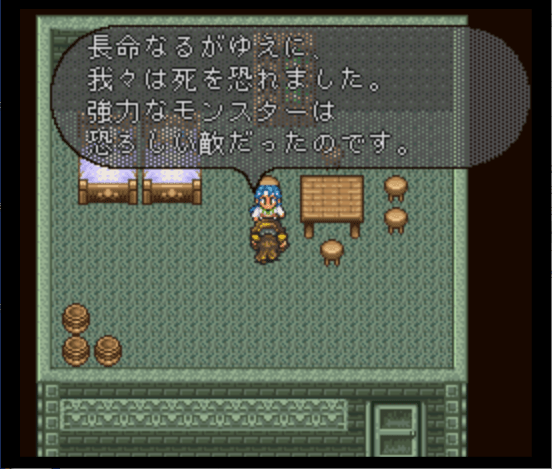

ロマサガ2の話は古代人から始まる





ロマサガ2のオープニングの動画をここに入れる。
七英雄という名前の通り、かつて彼らは英雄として扱われていました。なぜ豹変してしまったのか。それを知るためにはまず「古代人」について知る必要があります。
かつて世界には人間の前に「古代人」という人種がいました。彼らは人間よりも寿命が長く、であるが故に死を恐れていました。かれらはモンスターと畏れていました。自分たちに死をもたらす存在だったので。
そんなモンスターと対抗していったのが「七英雄」です。かれらは「吸収の法」という技を使い、モンスターの力を吸収して自分自身を強化。そしてモンスターを倒してきました。
英雄扱いされ、古代人の中でも発言力が強くなってきた七英雄を疎ましく思う古代人もいました。
水竜との会話
エイルネップの塔にいるロックブーケと会話する前に守護者を倒し、ロックブーケより先に沈んだ塔に行くと、最深部に水竜がいます。この水竜と会話。「お前たちに教えてやる義理はないが まあ良い。私も退屈していたところだ、話をしてやろう。もう何千年も前の事だが、この世界には大きな変動が訪れようとしていた。その変動から逃れるためにこれらの塔は作られたのだ。塔のまわりに術のフィールドを張りめぐらし、別の世界への道を作ろうとしたのだ。この塔での実験は成功し、まず七英雄が、そして他の者達が別の世界へと去っていった。その後世界は変動に見舞われた。ある所は砂漠に変わり、ある所は氷にうもれ、ある所は海中に沈み、そしてここは地中に沈んだのだ。この塔はもう作動しないが、私はいにしえの誓いにしばられてここを守り続けねばならないのだ。話はこれで終わりだ。」
皇帝「七英雄とこの塔の関係は？」
水龍「…。七英雄が送り出された時、塔がうまく作動せず、七英雄は行方不明になったのだ。」
オアイーブとの会話
オアイーブ「私たちは彼らを追放しました。実験中だった次元転移装置を使って、どことも知れぬ別世界へ追い払ったのです。」皇帝「それはひどいな。七英雄が腹を立てるのも無理はないな。」
オアイーブ「私もつらかったのです。その責任を感じて、私はこの世界に残りました。あの人達がいつか帰ってくると思いましたから。」
水龍は「塔がうまく作動せず」と言っていましたが、オアイーブは「実験中だった次元転移装置を使って、どことも知れぬ別世界へ追い払ったのです。」と言っています。
塔＝次元転移装置です。上手く動作せずというのは真実ではなく、意図的に別世界へ追い払ったというのが真実です。七英雄は古代人の手によって意図的に別世界に追放されたんです。・・・酷すぎますよね。そりゃ七英雄も怒りますあ。
スービエのセリフ
皇帝「この海は、あなただけのものではないわ。スービエ、一体何が狙い？七英雄は何を考えているの？」スービエ「では冥途の土産に教えてやろう。我々は世界を救った。だが救われた連中は、強くなりすぎた我々を恐れて、別の世界へ追放したのだ！数千年後、苦労して帰ってきてみると、奴らも違う世界へ行ったようだ。やつらはどこへ行ったのか。探しているのさ、復讐のために！」
皇帝「そんなことのために・・・・英雄が聞いてあきれるわ。お前のような下等生物にこの気持ちはわかるまいよ。では行くぞ、海の主と合体した力を見よ！」
ロックブーケのセリフ
守護者を倒してテレルテパの塔（？）にロックブーケが先に塔に行った場合のロックブーケのセリフロックブーケ「わかったわ、やっとわかった！」
何が分かったのか？もうわかりますよね。自分たちを別世界に送った古代人が今どこにいるのかが分かったといっているんです。
沈んだ塔でのロックブーケとの会話
ロックブーケ「この塔の秘密は、あなたの役には立ちませんわ。立ち去りなさい！」
皇帝「この塔の秘密？それは一体何？」
沈んだ塔「皇帝・・・・ハエのようにウルサイ奴ね。消えなさい！」
ロックブーケ「悔しいわ、やっと塔の秘密をつかんだのに。」
皇帝「秘密とは何、答えてよ！」
ロックブーケ「ああ、ノエル兄様、秘密は・・・・ここに・・・・」
皇帝「この塔の秘密・・・・？」
ノエルのセリフ
テレルテバの塔１見攻略の状態で移動個に来た場合の会話ノエル「サグザー、久しぶりだな。」
サグザー「ノエル・・・・戻ってきたのか。」
ノエル「これは皇帝陛下、私七英雄の一人ノエルと申します。古い友人と再会して、なつかしがっていたところです。」
皇帝「テレルテバの塔では一体何をしているのだ？なぜ、モンスターを使って人々を苦しめる？」
ノエル「あの塔は我々の時代の古い建物です。少々調べたいことがありまして、見張りをおいてあるのです。やはり、モンスターを使ったのはまずかったようですね。モンスターはモンスター。テレルテバの人を苦しめるつもりはなかったのですが・・・・。わかりました。モンスターどもは私の手で処分します。それでどうかお許し願いたい。テレルテバからも引きあげます。それでよろしいでしょうか？」
皇帝「それならよろしい。」
ノエル「ありがとうございます。では、そのように取り計らいます。」
ダンターグのセリフ
子供と子ムーにて皇帝「お願い、奥へ行かせて。」
ダンターグ「なんだ？虫けらの分際でこのダンターグに頼みごととは身のほど知らずが！命があるうちに帰れ！」
皇帝「ダンターグ・・・・七英雄がこんなところで何をしているの？」
ダンターグ「ふっ、オレの目的は強くなることそれだけだ。ワグナスやらノエルやらは、復讐を考えているようだが、そんなことはオレには関係ない。強いモンスターの多いこの地方で奴らと同化して、自らの力をアップしているのだ。」
皇帝「こんな所に長年いるから世の中の流れに取り残されてしまうのよ、まったく。ダンターグ、今後もここでおとなしくしていれば見逃してやるわ。」
ダンターグ「なに？今のはオレの聞き違いか？見逃してやろうだと？100年早いわー！」
ワグナスやノエルは復讐しようとしていることがわかります。復讐の対象は当然古代人です。
クジンシーのセリフ
古代人との関係がわかるような内容は特になしワグナスのセリフ
古代人との関係がわかるような内容は特になしボクオーンのセリフ
古代人との関係がわかるような内容は特になし古代人の中でも特殊な存在だった7英雄
7英雄と古代人の対立
そしてレオンの代へ
七英雄とアリ
その他
個人的に面白いと思った動画。もし最初に出会った七英雄がクジンシーではなくノエルだったら、という動画です。公式の動画ではないのでただの想像の話なのですが、ノエルはクジンシーと違って話の分かる七英雄なので、皇帝と対立するようなことはなかったのではないかという動画です。